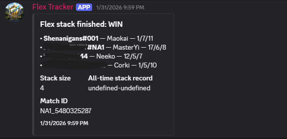
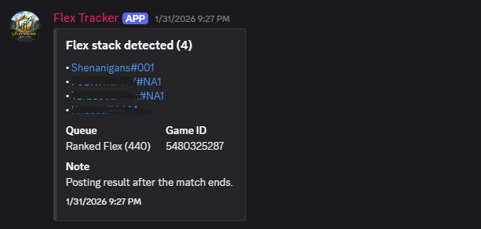

Features
Built to track stacks without being annoying.
Flex Tracker focuses on clean alerts, predictable behavior, and server-friendly configuration.
Stack detection
Alerts when 3+ roster players are detected queued together in Ranked Flex.
Roster management
Add/remove tracked players and keep your roster up to date with simple commands.
Low-noise design
One clean alert per detection moment — not spammy periodic updates.
Server configuration
Choose alert channel(s), thresholds, and optional behaviors to match your server.
Responsible API usage
Designed to respect rate limits and avoid unnecessary calls.
Clear output
Messages are readable and consistent so your alerts channel stays useful.
Screenshots

